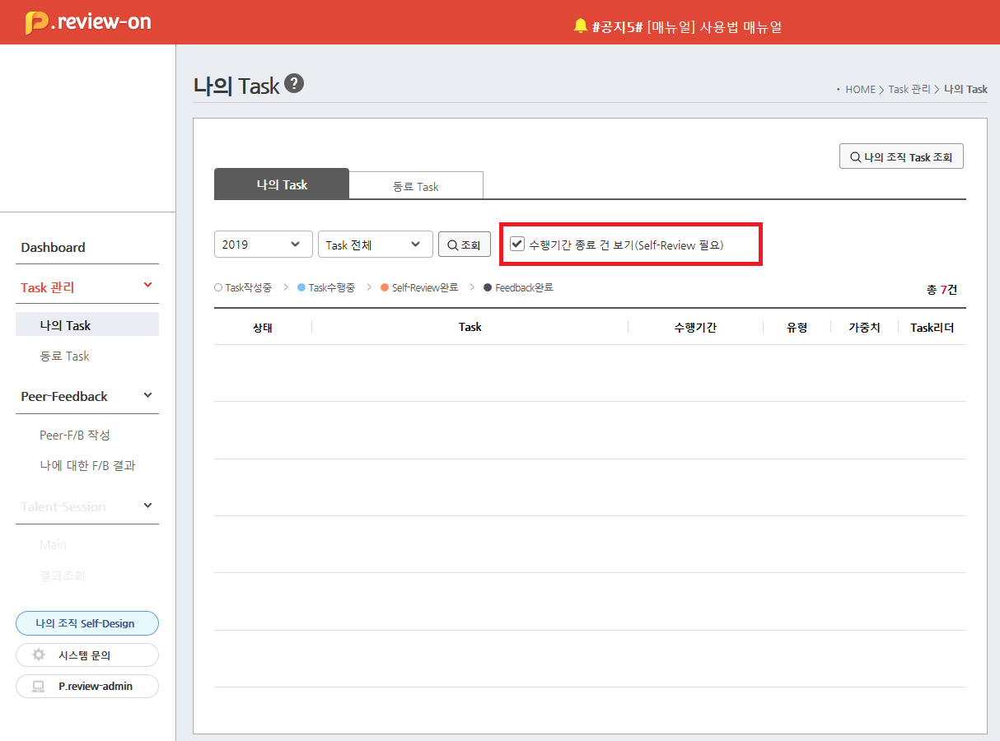

| 안녕하세요! ooo 님! |
수행기간이 종료된 Task를 보유하고 계십니다.
종료된 Task에 대한 Self-Review를 진행해 주십시오. |
| ※ “종료일이 지났으나 Review가 완료되지 않은 Task”를 2주 단위로 확인하여 알림 메일을 드립니다. |
| < Self-Review 필요 Task > |
| Task명 |
수행기간 |
| Task명 Task명 Task명 Task명 Task명 Task명 Task명 Task명 |
'19.01.03 ~ '19.05.30 |
| Task명 Task명 Task명 Task명 Task명 Task명 Task명 Task명 |
'19.01.03 ~ '19.05.30 |
|
○ Task 수행기간이 종료되면..
- Task등록자는 Self-Review를 해야 하고,
- Task리더는 Feedback/달성도평가를 해야 합니다. |
○ Self-Review가 필요한 Task는..
- “P.review > Task 관리 > 나의 Task” 에서 (http://p-review.sktelecom.com/myTask/taskList)
- “□ 수행기간 종료 건 보기”를 Click 하시어 확인하실 수 있으며, |
 |
○ Self-Review는..
- “Task 상세화면 > Self-Review” 버튼을 Click 하여 진행하실 수 있습니다. |
|
○ 만약 Task 종료일이 변경되었다면..
- “Task 상세화면 > 수정” 버튼을 Click 하시어 기간 변경이 가능합니다. |
진행 중 궁금하신 사항은
P.review 좌측 하단의 “시스템 문의”도 적극 활용해 주십시오. |
| 감사합니다. |